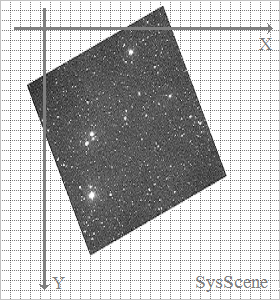

Unit: DeLaFitsGraphics
Type: class
Inherited from: System.TObject
Member Of: TFitsGraphic
Description:
The class is designed for affine transformation of the graphic image of data: shift, rotation, scale, shear.
of the graphic image of data: shift, rotation, scale, shear.
There are two coordinate systems of the frame:
- SysScene - current coordinate system, after a series of affine transformations;
- SysFrame - coordinate system of the frame, associated with NAXIS1, NAXIS2;
By default, after creating an object TFitsGraphic, SysScene ≡ SysFrame.

After a series of affine transformations (see methods Trn, Scl, Rot etc.) the frame position as though changes relative to SysScene:

Method for creating a graphic image of the data - TFitsGraphic.GraphicRead, uses the coordinate system a SysScene.
Constructor & Destructor
constructor Create |
The constructor. TFitsGraphic creates this object |
destructor Destroy; override |
The destructor. TFitsGraphic destroys this object |
Public methods
ClipFrmInFrm |
Returns a polygon TClip in system SysFrame - intersection a region TRgn of SysFrame and the full region of the frame DataRgn |
ClipFrmInScn |
Returns a polygon TClip in system SysScene - intersection a region TRgn of SysFrame and the full region of the frame DataRgn |
ClipScnInFrm |
Returns a polygon TClip in system SysFrame - intersection a region TRgn of SysScene and the full region of the frame DataRgn |
ClipScnInScn |
Returns a polygon TClip in system SysScene - intersection a region TRgn of SysScene and the full region of the frame DataRgn |
Set the matrix of affine transformations to the original state: SysScene ≡ SysFrame |
|
Multiplies the matrix of affine transformations |
|
PixFrmToScn |
Converts the coordinates of the pixel out of SysFrame into SysScene |
PixScnToFrm |
Converts the coordinates of the pixel out of SysScene into SysFrame |
PntFrmToScn |
Converts the coordinates of the point out of SysFrame into SysScene |
PntScnToFrm |
Converts the coordinates of the point out of SysScene into SysFrame |
QuadFrmToScn |
Converts the coordinates of the region TRgn of SysFrame into the quadrangle TQuad of SysScene |
QuadScnToFrm |
Converts the coordinates of the region TRgn of SysScene into the quadrangle TQuad of SysFrame |
RectFrmToScn |
Returns a rectangle TQuad - contour of the region TRgn of SysFrame in system a SysScene |
RectScnToFrm |
Returns a rectangle TQuad - contour of the region TRgn of SysScene in system a SysFrame |
Rot overload |
Rotating: ±α |
Scl overload |
Scale: (sX, sY) |
Shx |
Shear (bevel) along the X axis: α |
Shy |
Shear (bevel) along the Y axis: α |
Trn overload |
Shift: (dX, dY) |
Public property
Fits reference |
Reference to the owner - TFitsGraphic, see topic Architecture |
MatrixFrm readonly |
Matrix of affine transformations: describes a coordinate system SysScene in a coordinate system SysFrame |
MatrixScn readonly |
Inverse matrix of affine transformations: describes a coordinate system SysFrame in a coordinate system SysScene |
See Also:
—
Created with the Personal Edition of HelpNDoc: Produce Kindle eBooks easily
Copyright © 2013-2016, Evgeniy Dikov
Support: delafits.library@gmail.com
Sources: https://github.com/felleroff/delafits